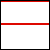
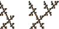
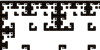

| 1-step memory | |
| Pairs of horizontal, vertical, and diagonal lines. Each endpoint of these lines is a fixed point of one of the Ti. Each line in the pair can be created independently of the other. | |
|  | Are there other possibilities? We have just seen pairs of lines with endpoints
a pair of fixed points, and in the sample pairs of lines with endpoints on each
side generated by a |
|  | What happens if we try to combine some of these lines? |
| Here we identify romes in IFS images. | |
| 2-step memory | |
|
Here we find 2-step memory table that generates a 1-step picture. |
| For a given | |
|  | Here we ask if a given picture produces with |
Return to IFS with Memory Lab.